| 日付 | 2017年8月20日（日） |
|---|---|
| メンバー | 家族（妻、長女・6歳、長男・4歳） |
| アクセス | 車 |
今年の盆休みはもうすぐお終い。結局何もしない休日になってしまった。
本日もあいにくの空模様で、山には出かけられないが、
昭和記念公園にあるレインボープールに行ってみることにする。
太陽が出ておらず少々寒そうだが、夏休みの最後の思い出作りに
出かけることにする。
プールは9時半にオープンするため、9時に駐車場に到着する。
駐車場のオープンも9時半なのだが、幸いもう開いている。
この時間だと駐車場はまだがらがらだ。
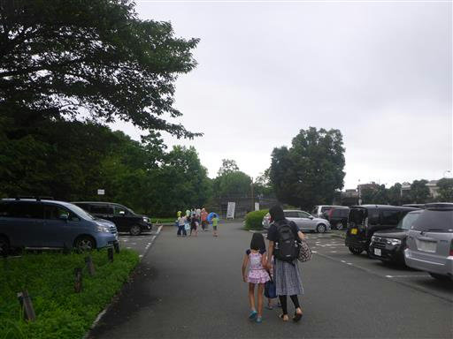
それでもゲート前にはそこそこ人が並んでいる。
駅と直結している公園のため、電車で来る人も多いのだろう。
2番目の列の一番後ろに並ぶ。
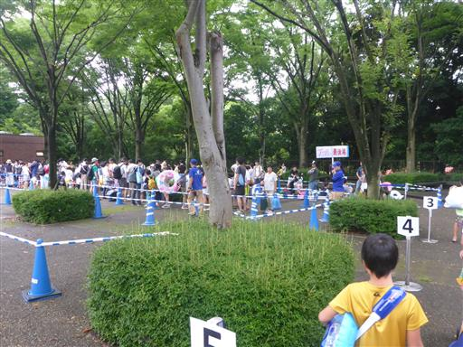
待ち時間を利用してプールの用意。
浮輪を膨らませたり、日焼け止めを塗ったりして開園時間を待つ。
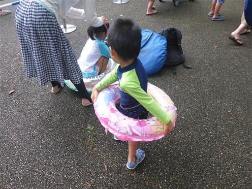
昭和記念公園は有料の公園なので、公園自体に入るのにチケットが必要だ。
来る途中にコンビニで割引チケットを買っておいたのでスムーズに入れる。
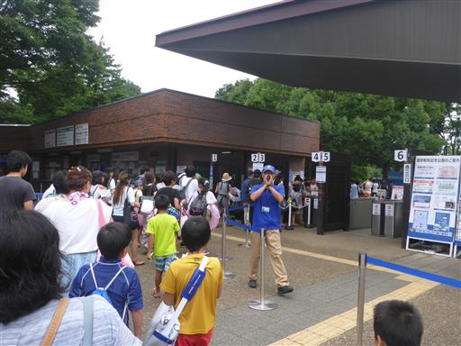
ここからプールまでぞろぞろ歩いていく。周りの人は全員プール目的だろう。
ここで走って追い越していくのは、ちょっと大人げない。
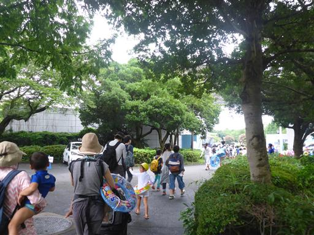
プールの入口に到着。ここでもチケットを見せる。
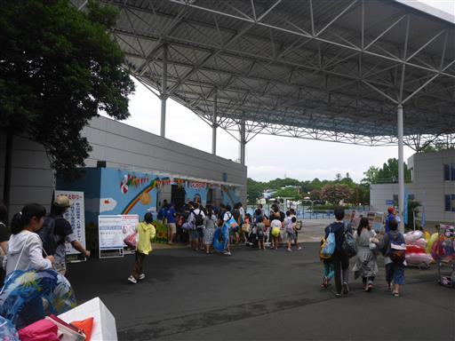
もうすでに水着に着替えているため、更衣室は素通りして早速テントを設営。
場所取り競争が激しいかと思ったら、そうでもない。
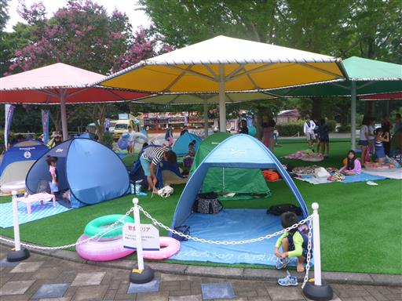
目の前のプールには誰も入っていない。
オープン前だと錯覚してしまうが、もういつでも入っていいようだ。
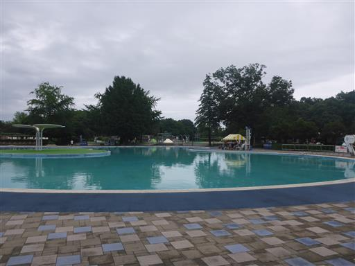
準備が整った人から少しずつプールに入っていく。
こちらは大きな流れるプール。流れる速度が遅いので、
一周するのにすごく時間がかかる。気温が低いのでちょっと寒い…
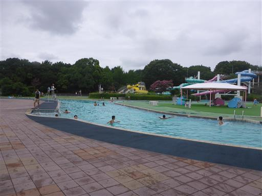
こちらは波の出るプール。波の出るプールは初めてだが、結構楽しい。
地面が固くなければもっと良いのだが…
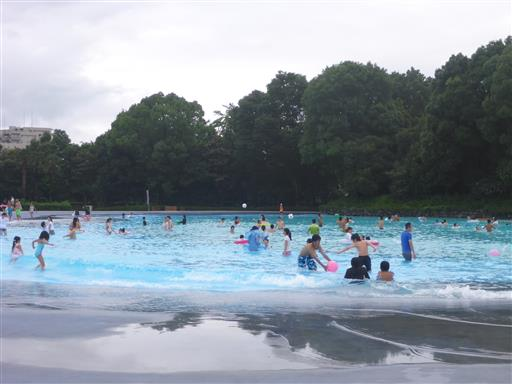
子供でもできる小さなウォータースライダーをやってみる。
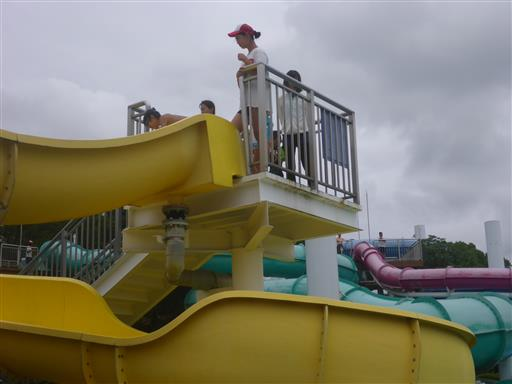
まずは抱っこで滑る。体重が重くなると滑りが悪くなり、全然スピードが出ない。
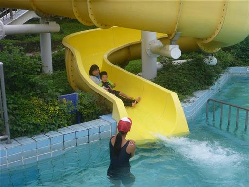
お次は息子一人で挑戦。全然怖がっておらず、とっても楽しそうだ。
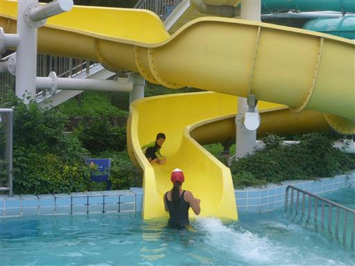
着水地点のプールは深いので、監視員の方にキャッチしてもらえる。
滑り台を滑っているだけなのに、何故半ケツになるのか！？
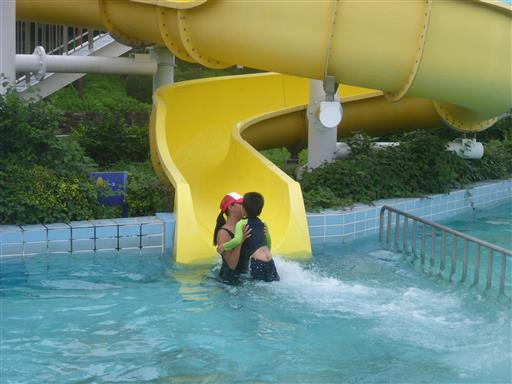
次は遊具のある子供向けプールで遊んでみる。
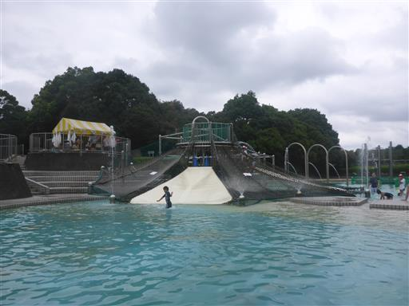
ネットには「のぼらないでください」と書かれている。
ではこのネットは何のためにあるのだろう？混雑期のみの開放なのだろうか？

滝のあるプール。ここも子供向けで水深は浅い。
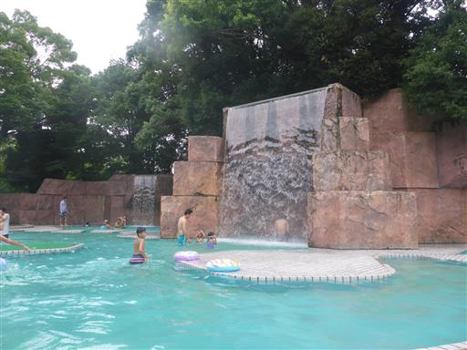
滝の裏は通れるようになっている。
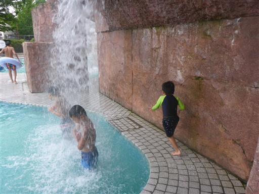
子供向けウォータースライダー。
監視員が非常に厳しいこのプールだが、ここには監視員がいないため無法地帯になっている。
子供たちが思い思いの体勢で滑っている。
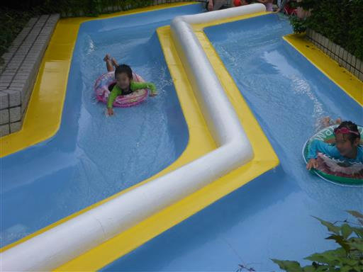
1時間に1回の10分休憩。このルールはどこのプールでも同様だ。
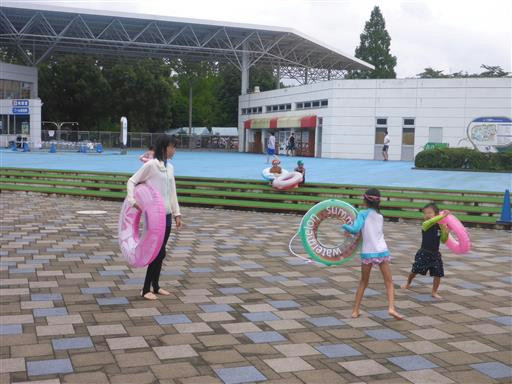
昼食後は幼児用プールに。
この施設では浮輪に乗って浮かぶことは禁止されているようで、
水深20cm程度のこのプールでも浮輪に乗っていると注意されてしまった…

次に上から水が落ちてくる幼児用プールで遊ぶ。
水がある程度たまると水車が回って、大量の水が落ちて来るような仕組みになっている。
設計ミスか、バランスが取れてしまって回転しなくなっている水車も多い。
子供たちはたまに落ちてくる水を浮輪で受け止めて遊んでいる。
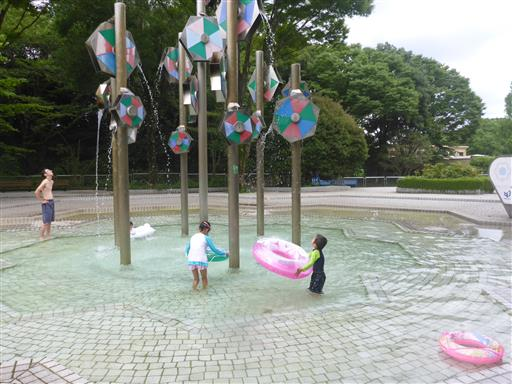
最後に流れるプールで少し遊んで15時半に撤収することにする。
お盆を過ぎた曇の日ということもあり、本日はプールが非常に空いていた。
大規模なプールで遊びごたえがあるので、来年も来てみようと思う。
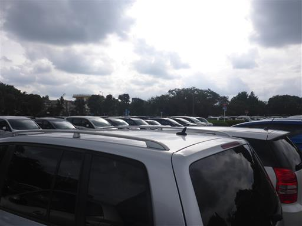